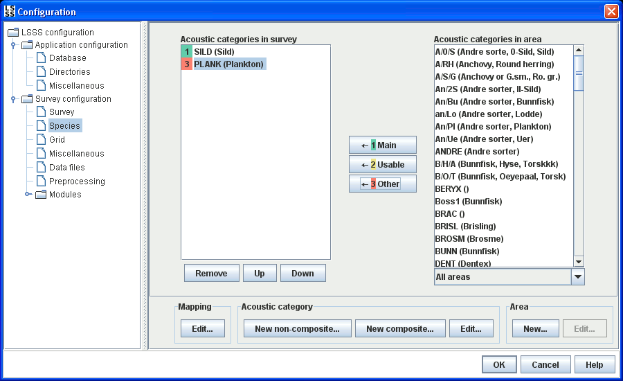
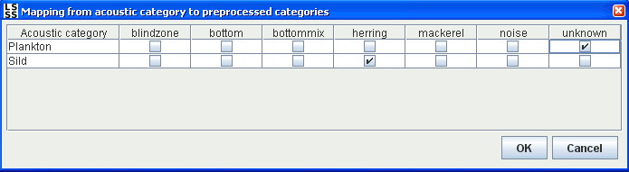
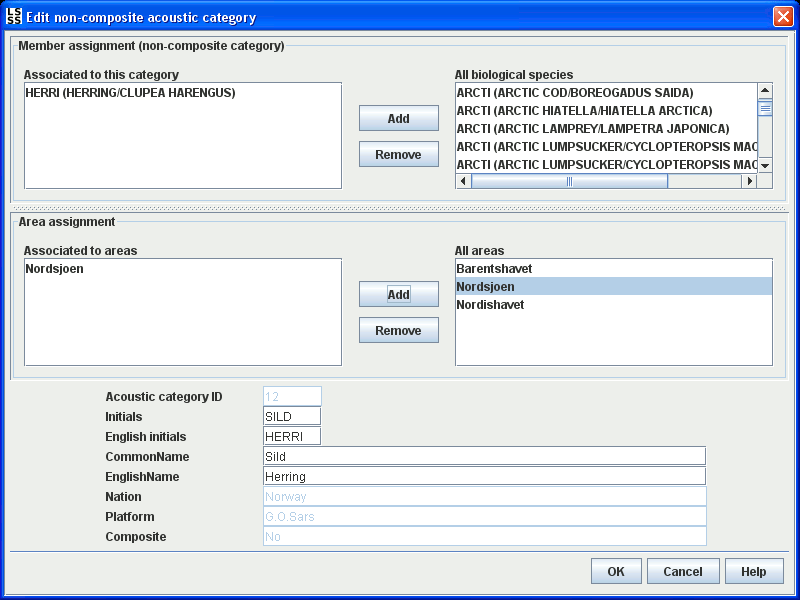
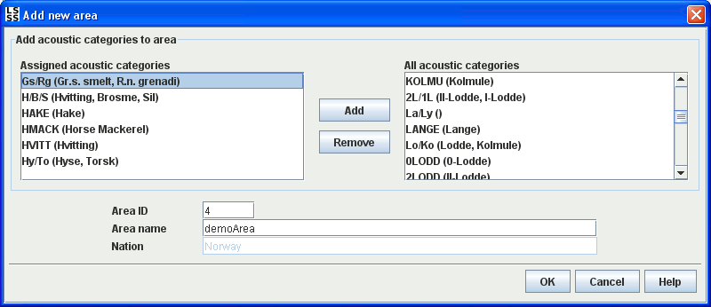

Select which acoustic categories to interpret in the survey from a list of available acoustic categories. By selecting an area in the combo box, only the acoustic categories associated to that area are shown in the list to the right.
Use the buttons 1, 2 or 3 to add one or more acoustic categories. A selected category can have one of three different statuses in the interpretation:
The selected acoustic categories will appear in the same order in the interpretation module.
The lower row buttons can be used to define mapping to KORONA categories, acoustic categories, and areas:

This dialog can be used to configure a relationship between acoustic categories and preprocessed categories. For each acoustic category, the user can select which preprocessed categories correspond to the acoustic category by checking the boxes in the table.
To use this dialog, the preprocessing must have been performed or a configuration file with categorization or plankton categorization must have been configured in the preprocessing panel. If not, no categories will appear as columns in the dialog.
The relationship can be used for faster interpretation in the interpretation module.

This dialog is used for creating a new or editing an existing acoustic category.
The upper section of the dialog lets the user decide the contents of an acoustic category. The right list
shows the available elements, while the left list shows the elements that the category is
currently composed of. If the user is creating or editing a non-composite category, a list
of biological species will be displayed in the list to the right.
In the case of editing or creating a composite category, the list to
the right will show all acoustic categories.
The middle part of the dialog lets the user associate the acoustic category to one or more areas.
The user can define native and English initials as well as native and English names for each category. In the case of a new category, the user can also decide the ID, although the first available ID is suggested. If the user tries to create a category with an ID that is already in use, an error message will appear.
The category is stored in the database when the user pushes the OK button. An acoustic category is always associated to a platform.

This dialog is used for creating a new or editing an existing area.
The user can select which acoustic categories to associate to this area, as well as the name of the area. An area is associated to a nation, and is stored to the database when the user pushes the OK button.
NB: Since Area is a nation-wide table, i.e. common to all platforms of a nation, additions of new Areas need to be coordinated. If a single platform defines its own areas, a conflict might occur when surveys from several platforms are imported to the same database.